J'ai gratté « Oubrenne ». Il ne reste que la case.
Je ne me souviens plus du nom. C'est ça, le prix.
Un tower defense où l'on ne bloque pas les légions : on leur redessine le chemin, et chaque trait efface un nom.
Un prologue et deux chapitres dans le navigateur à la souris
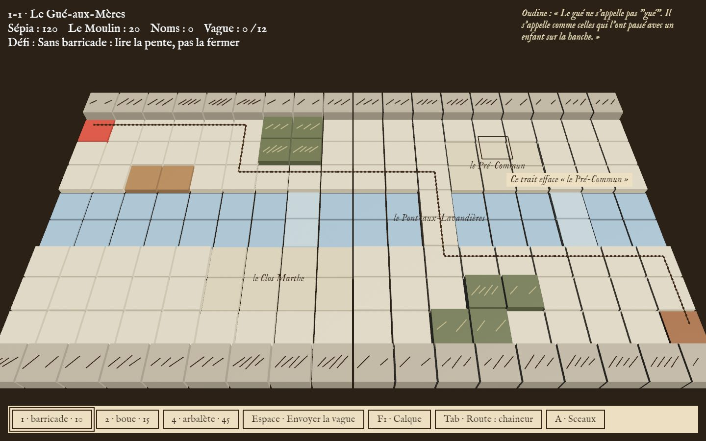
Les légions suivent la route la moins chère. Nève change le prix des cases : boue, ronces, barricades, tours. Mais pour changer un lieu, il faut lui retirer son nom, et ce nom sort de toutes les mémoires.
La colonne part de la case rouge et suit la route la plus courte. Cliquez une case pour y encrer une barricade : le trait d'encre montre où elle passe désormais.
Sépia : 70Rôle des Noms : 0
Une carte qui ne laisse passer personne est refusée.
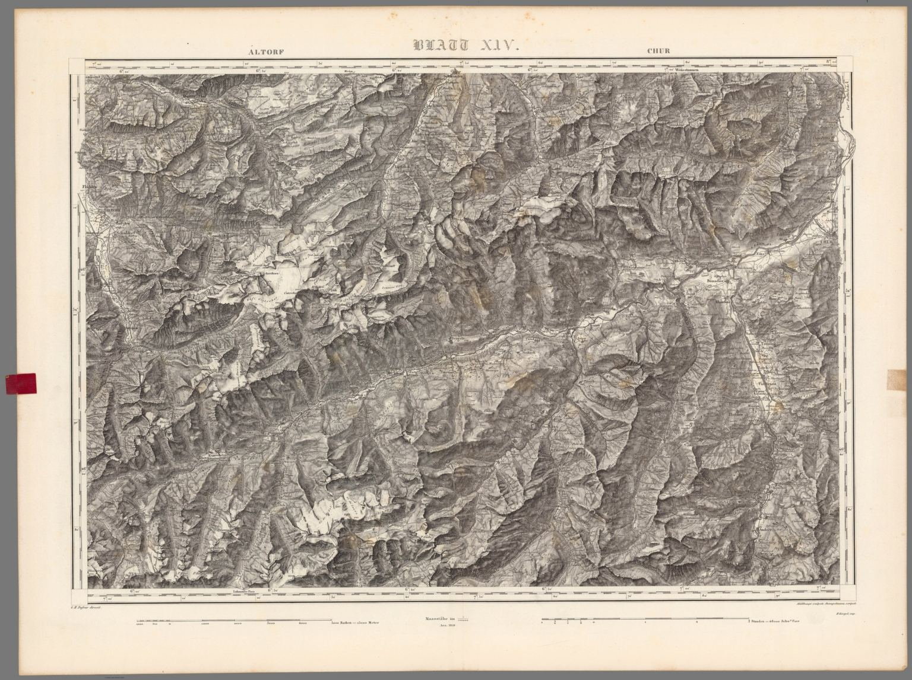
Dans la marge, sa main répond à la vôtre : chaque crue, chaque nom gratté, chaque choix y laisse une ligne.
À la fin de la campagne, le carnet se relit.
J'ai gratté « Oubrenne ». Il ne reste que la case.
Je ne me souviens plus du nom. C'est ça, le prix.
Oudine : « Le gué ne s'appelle pas “gué”. Il s'appelle comme celles qui l'ont passé avec un enfant sur la hanche. »
Ils suivent la route la plus sèche. Toujours. C'est moi qui le leur ai appris.
Un Échassier fredonne. Je connais cet air : la berceuse d'Oudine.
C'est ma main sur la borne. Dix ans, et l'encre n'a pas pâli.
Corentin : « Donne-les-moi et je retire la 4e. C'est de l'arithmétique, Nève. »
Tout est de l'arithmétique. C'est ça le problème.
Les Chaîneurs et les Échassiers jugent le terrain lui-même. La boue, les ronces et le gué n'ont pas le même prix pour tous : une case encrée change ce prix, et la colonne se tord.
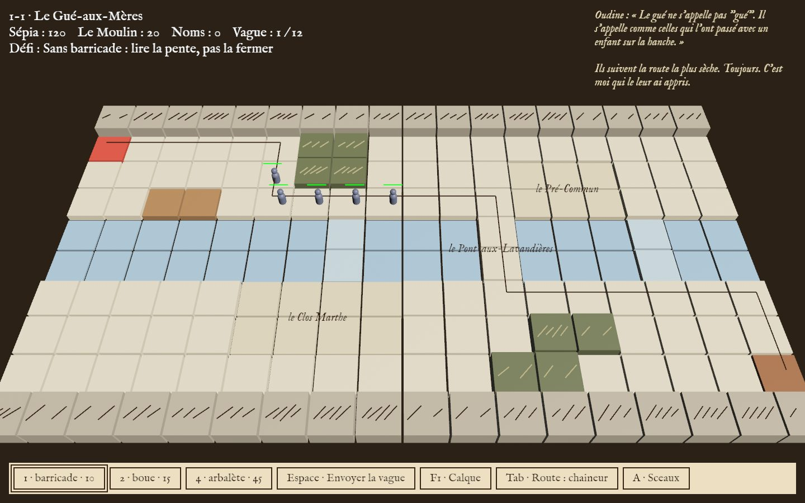
Les Hardes ne lisent pas la pente : elles fuient le regard des tours. Pour les rabattre, on place des tours, pas des murs. Le Calque montre la carte telle que chaque peuple la lit.
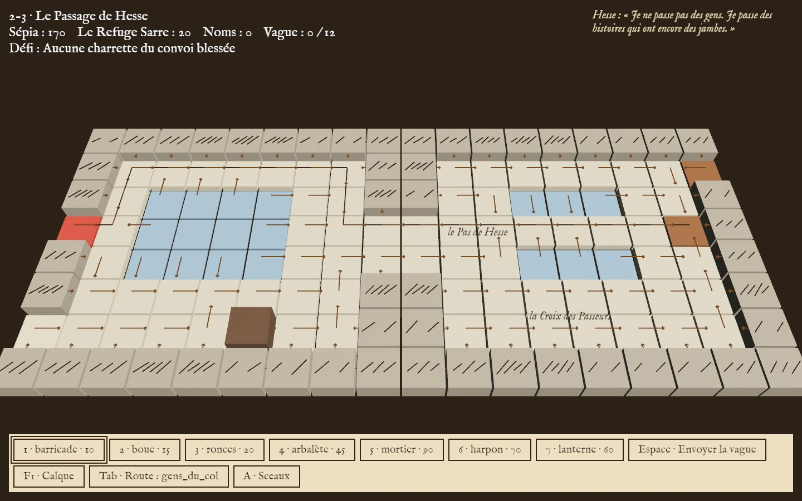
Les Jalonneurs ne voient que la Borne-Mère à voler, les Fuyards cherchent le Refuge, le convoi de Hesse la sortie du col. À eux, il faut garder un chemin court et sûr.
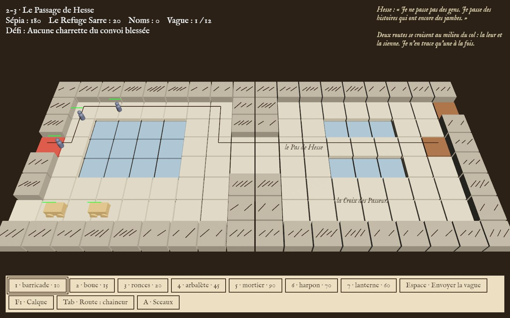
Une carte qui ne laisse passer personne est une carte close : la terre la rejette, et même l'Empire s'y tient. La loi vaut pour la carte de demain : avant la Crue, on n'encre pas ce qui fermerait tout sous l'eau.
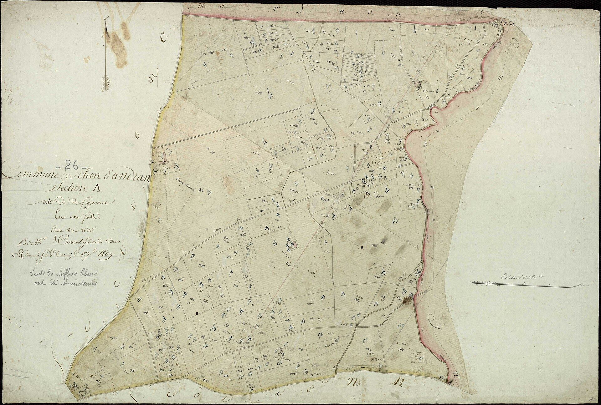
Dix ans plus tôt. Une vallée à simplifier, et un village sur la route.
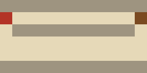
« Dix ans plus tôt. La Chancellerie m'a demandé de simplifier cette vallée. »
Apprendre la Pente. La Crue noie le sol bas à la sixième vague.
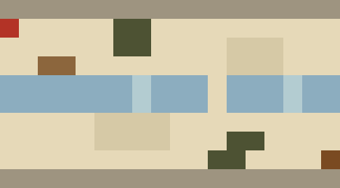
« Les hachures frissonnent au bord du bief. La prochaine fois, la terre hésitera. »
Le But : les Jalonneurs visent la Borne-Mère, les Fuyards cherchent le Refuge.
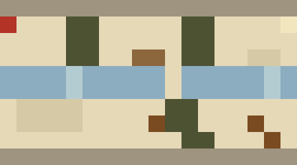
« Des gens du bocage, leurs vaches devant. Chacun porte un nom. »
Tenir pendant qu'Oudine grave le Rôle, puis choisir où placer le Refuge.
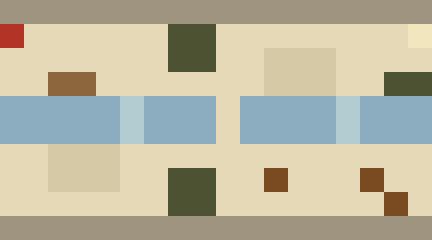
« Le Rôle est gravé. Reste à savoir où mettre ceux qui fuient. »
Un chariot d'arpentage en trois phases : le Levé, le Bornage, la Chaîne rompue.
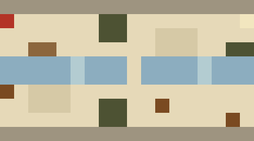
« Il a gardé ma façon de faire les V. »
L'Ombre et les Hardes. Le Gel fait du lac une route.
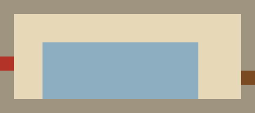
« Les Hardes lisent mes tours, et passent où je ne regarde pas. »
Une avalanche ferme le couloir sud. Puis Corentin réclame des déserteurs.
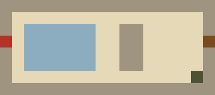
« L'avalanche. Le couloir sud n'existe plus que sur ma carte. »
Escorter le convoi jusqu'à la sortie du col, à travers les légions.
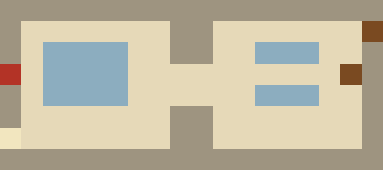
« Sous la glace fondue, des hachures que personne n'a tracées. »
Tout se joue à la souris : la barre du bas porte chaque outil et nomme sa touche. Le clavier va plus vite.
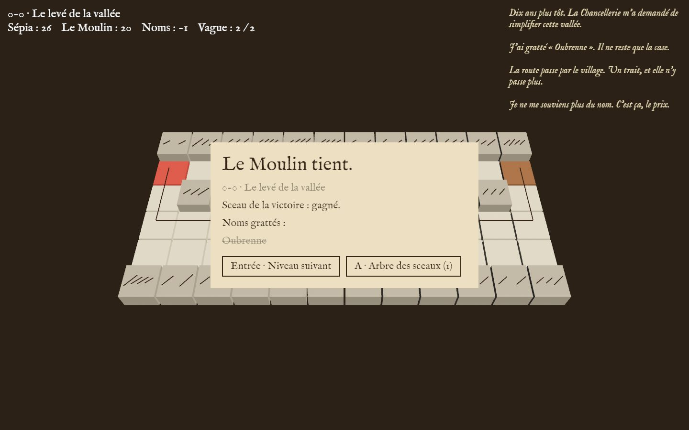
Le jeu tourne dans votre navigateur, et la partie reste enregistrée dans ce navigateur.
Un prologue et deux chapitres jouables
37 Mo à charger, une seule fois
À la souris, ou au clavier
Sur un ordinateur, de préférence
Jouer dans le navigateur